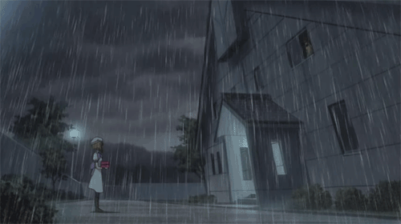

Director: Chiaki Kon
Production Studio: Studia Deen
Genres: Mystery, Horror, Supernatural, Psychological, Thriller
Episodes: 26 (Season 1), 24 (Season 2)
Aired: Apr 5, 2006 to Dec 17, 2007
Synopsis
After moving into the quiet town of Hinamizawa, Maebara Keiichi spends his days blissfully in school often playing games with his local friends. However, appearances can be deceiving. One fateful day, Keiichi stumbles upon news of a murder that had occurred in Hinamizawa. From this point on, horrific events unfold in front of Keiichi, as he soon learns his close friends may not be all that they seem.
Glass Reflection Review
My thoughts
Aside from the fantastic story, sound, and animation this anime provides, the main reason this anime is #1 on this list is a personal one. This is my absolute favorite anime because this is the first anime I watched that shows anime is not just for kids.
Story Time
Before entering college, I stopped watching anime because I didn't think anime was as entertaining as it used to be when I was a kid. In America, when you think of anime, you'll probably think of shows like Naruto, One Piece, Bleach, or whatever aired on Cartoon Network's Toonami. As kids, we were shown very action-oriented anime that has lots of fighting and comedy primarily aimed towards kids. Some time in high school, I thought this was all that anime was, and as I got older, I outgrew and got fed up with it. It wasn't until the end of my sophomore year that I found this show and decided to give anime one last try. This was nothing like the anime I saw when I was a kid.
Higurashi is the most violent, psychopathic, and bloody anime I have ever seen. I like to compare it to the Saw movies with their clever stories and generous amounts of on-screen blood and violence. When I saw this show, it broke my sense of thinking that all anime was for kids since this is definitely not a kids show, and it led me to discover more good anime like the ones on this list.
Aside from my personal reasons for loving the show, Higurashi is very excellent at pacing the audience. The story of Higurashi is actually broken into little arcs, each about four episodes long. Each arc has the same main characters in the same setting, but an event happens slightly different in each arc such that one of the main characters ends up brutally killing the others in the most horrible way possible. Each arc changes slightly in the hopes that at some point, we will reach a happy ending where the characters don't murder one another.
Until then, each arc focuses on what specific event drives one character to go insane and murder everyone. For each arc in Higurashi, what isn't exciting is the ending of each arc, it's the eventful journey to that ending. It's discovering how such a nice setting filled with characters who love each other led to a dark twisted ending. It's finding out what drove a character to madness, why they decided to do what they did, how they did it, and the consequences they face after committing their sins.
This isn't to say that the ending is something that's to be ignored or isn't exciting in the first place. At the beginning of each arc, you actually see how the arc will end, but it's the journey to that ending that really captivates the viewer.
Not only does this series offer a different view into what anime as a medium can produce, but it also has one of the best stories I have ever seen in an anime. It's downright bloody and violent, and it knows how to treat the viewer. This is the anime I actually recommend to people who don't watch anime in the first place. Before someone judges this anime altogether, I always recommend they watch the first four episodes of it before jumping to any conclusions. The first four episodes will show you exactly what you can expect from this anime, and you won't regret it.

"If you can hear it, then it’s speaking to you. And if you can see it, then it’s yours to have."
The Opening
The opening also have a special place in my heart with one of the most spin-tingling themes and animation I have seen. Much like Jormungand, I really wish they hadn't changed it in the second season. The lyrics are actually very dark if you listen to them, and they fit the show excellently.
What was behind me when I turned around (Who's in front?)
I raised my nails to the darkness (And slashed the night)
Raindrops become drops of blood
And stream down my cheeks
If there's no place anywhere that you can return to now...
Follow my finger
And I'll take you by the fingers
To the forbidden forest where cicadas cry
You can no longer turn back
Episode Links
The entire first season can be found here: http://www.animeflavor.com/node/11273
And the second season, Higurashi no Naku Koro ni Kai, here: http://www.animeflavor.com/node/9079